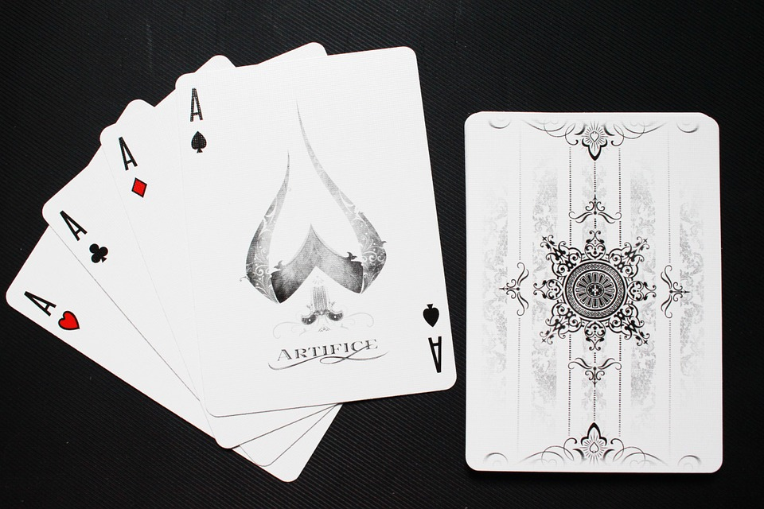

The Deck of Cards API¶
What is this Project?
The Deck of Cards API is a living project that tries to demonstrate the principles of Clean Architure using Command-Query Responsibility Segregation, domain events, and in-process messaging. It can be used to copy paste the occasional snippet, demonstrate how meaningful tests can be written, and see some advanced Api functionality in Asp.Net Core MVC .
I say ‘try’ because as developers, we are constantly learning, evolving, and applying a little bit of design opinion into the things we build. This project is meant to capture my ongoing learning and show other developers my victories and failures in developing public-facing, enterprise software.
The project strives to prove out the following features:
- In Process Messaging: Using the minimal, yet amazing MediatR library, we can achieve direct messaging or broadcast semantics for executing code, allowing us to develop with a publish/subscribe pattern as a first class citizen, improving our ability to write maintainable code.
- Robust structured logging with Serilog: This project uses Serilog to persist logs via Sinks. Old school file sinks? Check. ELK stack? Check. Logging done right - everyone loves this.
- Integration testing with XUnit: Sure you think your code works, but can you prove it? I tend to favor integration testing over unit testing, but the project strives to have a good amount of tests that cover core functionality, as well as assert some of the basic configurations to ensure nothing breaks when we tweak the MVC builder.
- CQRS Request Handlers: A controller shouldn’t be involved in business logic, or care about custom validation rules. To this end, controllers receive pre-validated models, and only dispatch a request object into a direct message broker (Mediatr). This means our Api ends up being a true interface over our core application, and maximizes utility while minimizing breakage.
- Resilience Engineering with Polly: We should work towards ensuring our software never fails. Ever. No exceptions. The defacto standard for this in .Net is Polly.